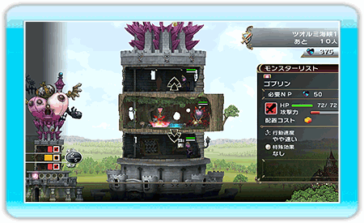

「光と闇の姫君と世界征服の塔」の世界では大きく「ワールドマップ」と「ステージ」の2つに分けることができます。
魔王として世界を征服するために、まずはそれぞれでできることを確認し、ステージへと攻め込みましょう。
○ワールドマップ
攻め込むステージを選択し、大戦争をはじめることができます。
また、モンスターの成長、塔の拡張、所持アイテムの確認などをすることもできます。
ミラの服を持っている場合は、ここで着替えることもできます。（ミラの着替えを持っていない場合は、この項目は選択できません）
○ステージ
「大戦争を開始」するとステージへ移動します。
ここでは、ネガティブパワー（NP）を使用してフロアを設置したり、フロアにモンスターを召喚することができます。
また、ワールドマップでモンスターを成長させていた場合、NPを使用して召喚したモンスターのレベルをあげることができます。
●世界征服の流れ
1.世界征服に乗り出す
ワールドマップで攻めるステージを選び、大戦争を開始します。
2.冒険者を撃退する
ステージでは、NPを使用してフロアを設置できます。
設置したフロアにはNPを使用してモンスターを召喚できます。

攻めてきた冒険者をフロアのアーティファクトやモンスターで討伐すれば、NPを入手できます。
3.大勝利でカルマを入手
無事に勝利すると、そのステージは制圧済みとなり、クリア報酬としてカルマを入手できます。
4.塔の拡張とモンスターの成長
入手したカルマを使用してワールドマップで塔を拡張したり、モンスターを成長させることができます。